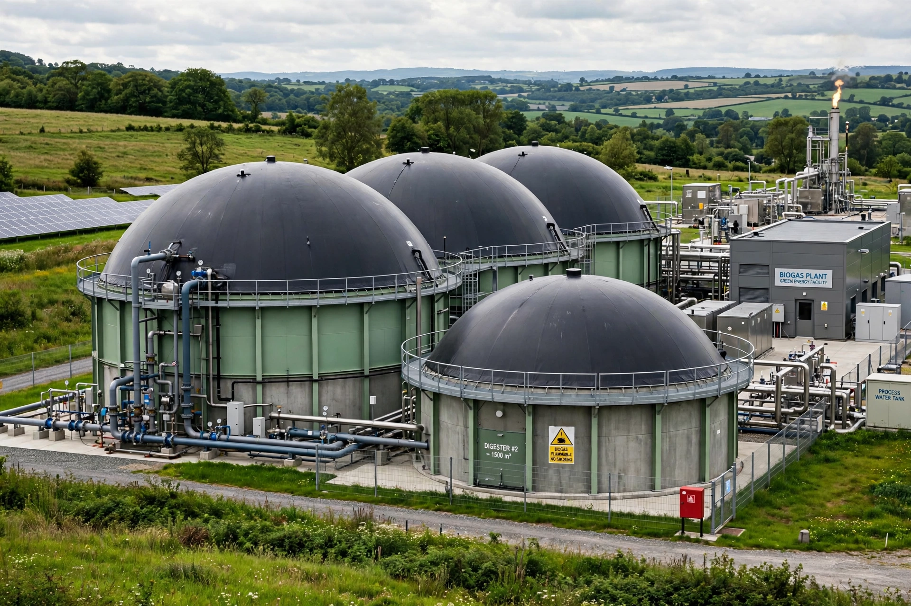

Anaerobic digestion is a sequence of processes by which microorganisms break down biodegradable material in the absence of oxygen. The process is used for industrial and domestic purposes to manage waste and to produce biogas, a mixture of methane and carbon dioxide that can be burned to generate electricity and heat or upgraded to biomethane.
| Anaerobic digestion | |
|---|---|
| Inputs | Manure, sewage sludge, food waste, energy crops |
| Outputs | Biogas (CH4, CO2), digestate |
| Operating temp. | Mesophilic ~37 °C; thermophilic ~55 °C |
The digestion process begins with bacterial hydrolysis, in which insoluble complex organic matter is broken down into soluble sugars and amino acids. Acidogenic bacteria convert these into volatile fatty acids; acetogens then produce acetic acid, ammonia, carbon dioxide and hydrogen; finally, methanogenic archaea convert these products into methane and carbon dioxide. The four stages are hydrolysis, acidogenesis, acetogenesis and methanogenesis.
Anaerobic digestion is widely used at sewage treatment works to stabilise sludge, on farms to treat manure, and in dedicated plants handling municipal food waste. The solid and liquid residue, called digestate, is nutrient-rich and can be used as fertiliser. In developing countries, simple household digesters provide cooking gas from dung and kitchen waste.
Biogas from anaerobic digestion was reportedly used to heat bath water in Assyria in the 10th century BC. Scientific interest began in the 17th–19th centuries with the work of Jan Baptista van Helmont, John Dalton and Humphry Davy; the first digestion plant was built at a leper colony in Bombay in 1859.
Anaerobic digestion — recreated from memory.